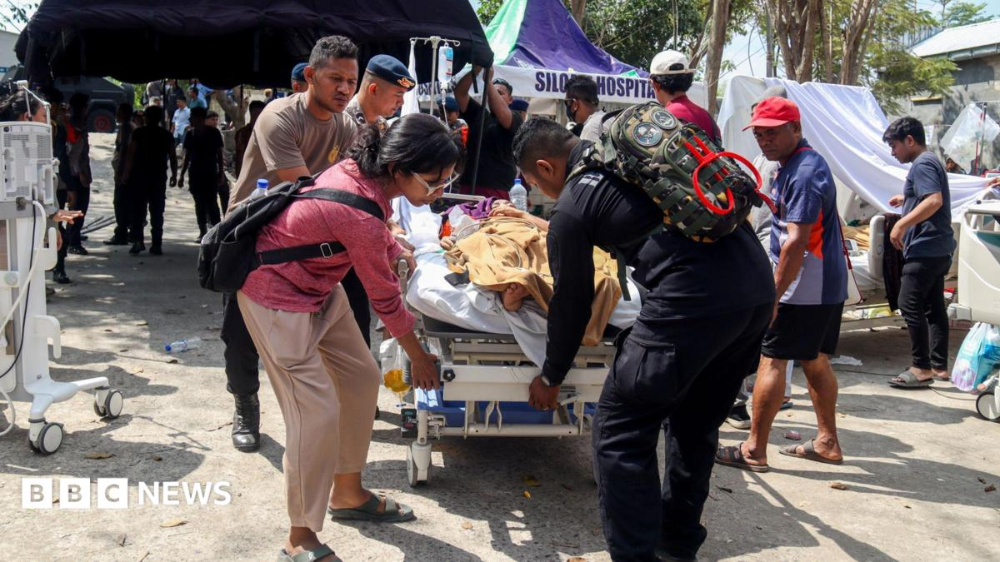

Trump's territorial claim over the Strait of Hormuz is a rhetorical escalation with no naval move behind it. Separately, a major earthquake in Indonesia has killed at least 47 people, a country most trading desks stopped watching Friday.

Read the synthesis →
Trump says he will soon declare the Strait of Hormuz United States territory, the chokepoint through which a fifth of global oil trade passes. This column has tracked Hormuz through a named shipping route, two carriers, and now a president's claim to sovereignty over water Iran has never conceded. The call: this is posture, not policy. A claim without a base, a treaty, or a UN filing behind it is a headline. Tehran's own state media has not responded to it. No fleet movement order has followed the words.
Indonesia's 7.7-magnitude earthquake has killed at least 47 people, per BBC and Google News wires.
Separately, insurers are recalculating exposure: a Manila-based reinsurer's catastrophe desk is now weighing Sunda Trench exposure against Tuesday's Colombia claims, two unrelated quakes in one settlement quarter. Kai Tanner's column on Taiwan's July intrusion leads: state-linked hackers ran the operation on free, open-source AI agent frameworks, no vendor, no invoice trail, while Hong Kong's new AI cyber rules still assume there's a company to subpoena. Watch whether Jakarta's death toll crosses 60 by tonight, the threshold where the response shifts from local rescue to a formal international appeal.